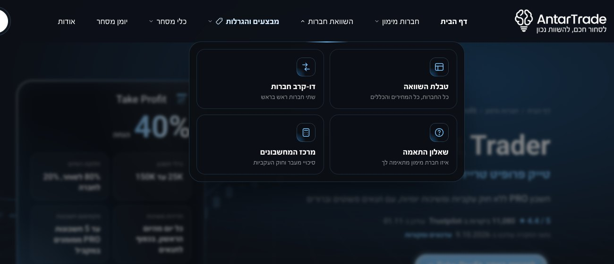
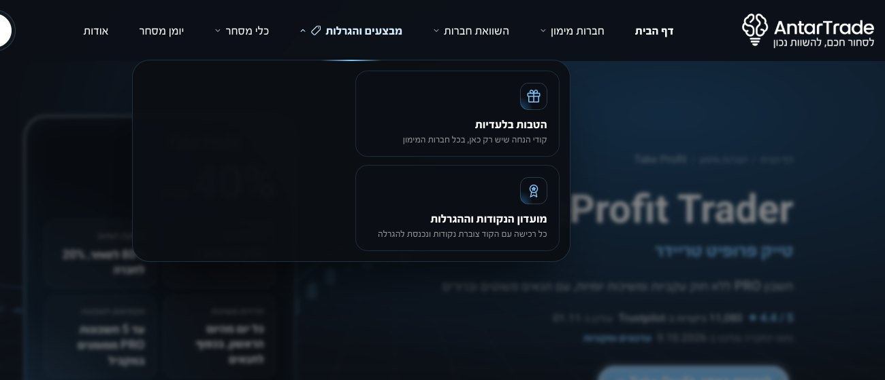
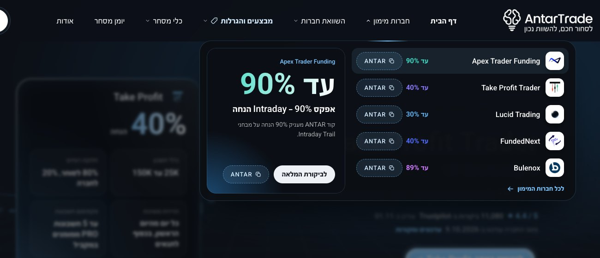
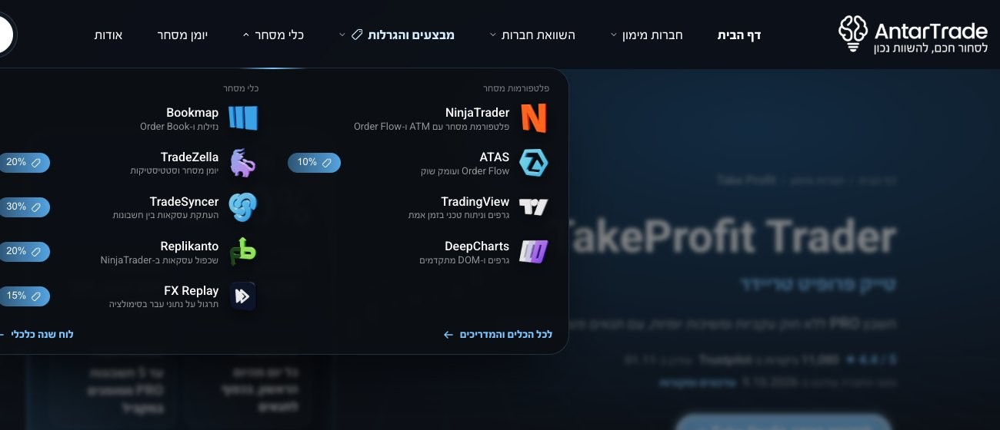

התפריט העליון - מה נועם התכוון
כך נראה כל פריט בתפריט כשעומדים עליו עם העכבר בדסקטופ. אפשר לבדוק בעצמך בדף טייק פרופיט.
השוואת חברות מת
לזה נועם קרא "מת": ארבעה ריבועים אפורים עם אייקון קטן וטקסט. בלי צבע, בלי לוגואים ובלי נתון אחד שמושך את העין.

מבצעים והגרלות מת
גם פה "מת": שני ריבועים אפורים צמודים לצד ימין, וכל החצי השמאלי של החלון ריק.

חברות מימון - להשוואה חי
ככה נראה תפריט "חי": לוגואים של החברות, אחוזי הנחה בצבע, כרטיס מבצע גדול.

כלי מסחר - להשוואה חי
גם הוא "חי": לוגואים צבעוניים של הכלים ותגיות הנחה.
